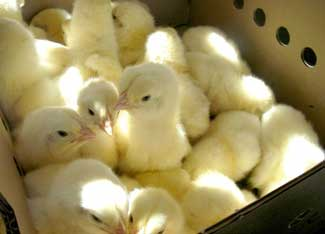

Hatching eggs in an incubator or under a hen is an exciting project, and shopping for chicks or other baby poultry at a farm store is great fun. But you can order baby chickens to be shipped from a poultry hatchery through the mail, too. This is a great way to find some unusual breeds or varieties. It also helps with planning: If you rely on hatching eggs, you can never be quite certain how many chicks you'll get.
Right before hatching, chicks and other baby poultry absorb the last of the yolk - their food source during incubation. For most species, this last bit of yolk provides enough nutrition to sustain the baby for about three days without eating or drinking, which makes shipping chicks through the mail possible, if they arrive quickly.
You can find the breed or variety of chickens, ducks, turkeys, geese or other fowl you're looking for easily and quickly with the Mother Earth News Hatchery Finder" href="http://www.motherearthnews.com/Find-Chickens-Poultry-Hatchery.aspx" target="_blank">Mother Earth News Hatchery Finder, which searches more than 60 hatcheries from across the United States.
When preparing your order, here are some good things to keep in mind.
Chicks and other baby poultry must be kept warm. While they're traveling, this heat is provided by body heat from the group. The minimum order for chicks is usually 25, although some hatcheries ship smaller numbers during warm months. The minimum order for other species is more variable. Minimum orders for ducklings may be 10, 12 or 15, depending on the hatchery.
Chicks are shipped in cardboard boxes designed to keep them warm while allowing fresh air inside for them breathe. Although some hatcheries use small boxes designed for 25 chicks, many use boxes divided into four areas designed for 100 chicks total. Some hatcheries charge a small fee if the box isn't filled (if your order fills only one of the four areas).
Before placing your order, check on shipping options. Try to find a hatchery close to you instead of across the country. Baby poultry are shipped via express mail or priority mail to ensure quick delivery. Some hatcheries allow you to choose the shipping method. If you want express mail, you pay the premium for quicker delivery, but a shorter transit time is better for the chicks.
The post office will call you to pick up your order instead of delivering the cheeping, chirping box of babies. This gives you the opportunity to pick them up early in the morning instead of waiting for the normal mail route to your home.
Even if you hatch chicks at home, you can reasonably expect a 4 percent mortality rate within the first week. Many hatcheries include extra chicks to account for this. Hatcheries often insure orders with the post office, too. Whether the shipment was insured or not, open the box when at the post office to check for any losses. In order to be reimbursed for chicks that have died in transit, a postal employee needs to sign your claim form. If you take the box home and bring it back later, they won't know what's happened since it left the post office.
Be prepared! Have your brooder set up so when you get the call from the post office, you can quickly start the chicks in their new environment.
For more information on raising chickens and other poultry, read How to Raise Chickens and Anyone Can Raise Chickens. There's even more information on the Chicken and Egg Page.
Have you received chicks by mail? Share your story in the comments section below.|
 VEVILA/FOTOLIA Chicks are shipped in cardboard boxes designed to keep them warm. |
|
|